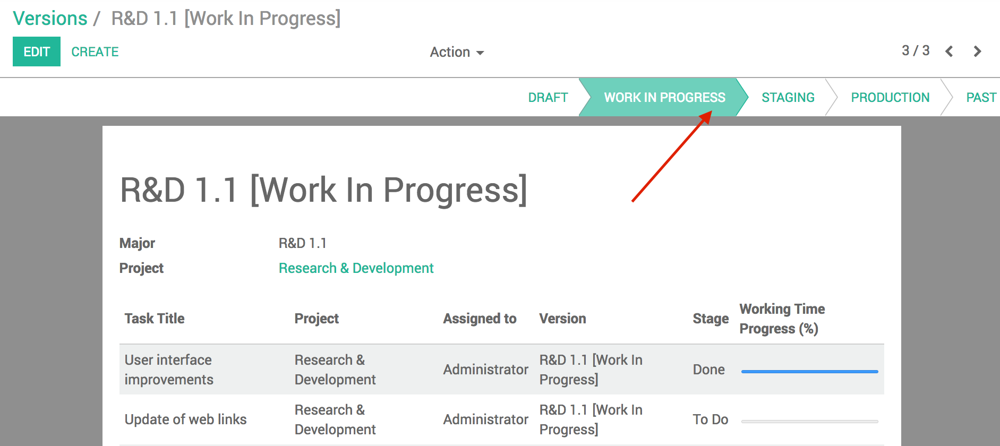
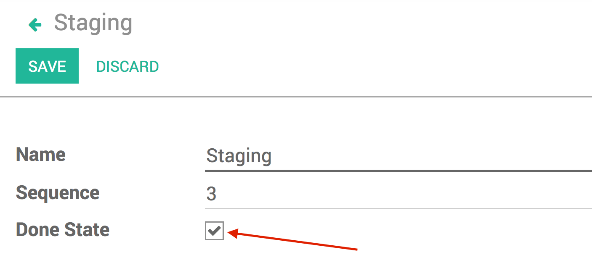

Niboo is a technology company, specialized in developing business solutions to your needs. Niboo combines expertise in both IT and management consulting. As an active partner in the Odoo Community, Niboo also contributes to the evolution of open-source business solutions.
User guide
How to use this module

Go to Search > Versions and create a Version
If you want to add a new Version State, go to Configuration > Version States
Add tasks to the desired Version
Advance the Version State when needed
Notes
The Version States which have Done State checked can only be activated if all their tasks are in the stage Done
When a version of a Project is set to the Production state, the previous Production version of this project is automatically set to the state Past

Related modules from Niboo
Project Workflow
Define a workflow to better manage the state of your tasks
Create flows that are personalized to your different types of tasks
Easily advance your task through its different steps
Project Version Workflow
This module is the link between the modules Project - Workflow and Project - Version Management.
It automatically changes the step of your tasks when you put a version in production.